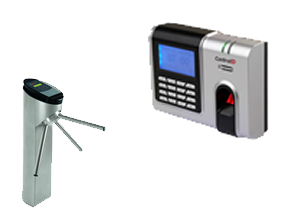

Controle lógico
São barreiras que impedem ou limitam o acesso a informação, que está em ambiente controlado, geralmente eletrônico, e que, de outro modo, ficaria exposta a alteração não autorizada por elemento mal intencionado.



São barreiras que impedem ou limitam o acesso a informação, que está em ambiente controlado, geralmente eletrônico, e que, de outro modo, ficaria exposta a alteração não autorizada por elemento mal intencionado.